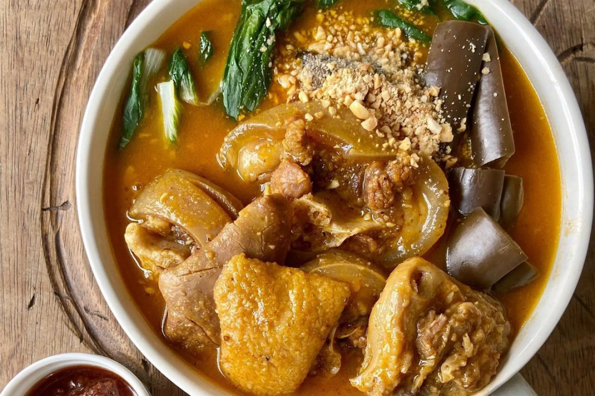

Kare-Kare

Ingredients
- 1 kg oxtail, cut into 2-inch pieces
- 1 large onion, quartered
- 2 cloves garlic, crushed
- 2 cups unsalted roasted peanuts
- 1/4 cup glutinous rice
- 1 large eggplant, sliced
- 1 bunch bok choy
- 1 cup long beans, cut into 2-inch lengths
- 4 tablespoons annatto seeds
- Salt, to taste
- Shrimp paste (bagoong), to serve
Instructions
- Boil oxtail in a large pot with enough water to cover, along with onion and garlic. Simmer until tender.
- In a pan, toast the glutinous rice until golden brown. Grind together with peanuts in a food processor until it forms a paste.
- Steep annatto seeds in warm water. Strain to get annatto water and discard seeds.
- Add peanut-rice paste and annatto water to the pot with oxtail. Stir well until combined and bring to a boil.
- Add eggplant, bok choy, and long beans. Cook until vegetables are tender.
- Season with salt. Serve with bagoong on the side.
Time
- Preparation Time: 30 minutes
- Cooking Time: 2 hours
- Total Time: 2 hours 30 minutes
Enjoy Cooking!